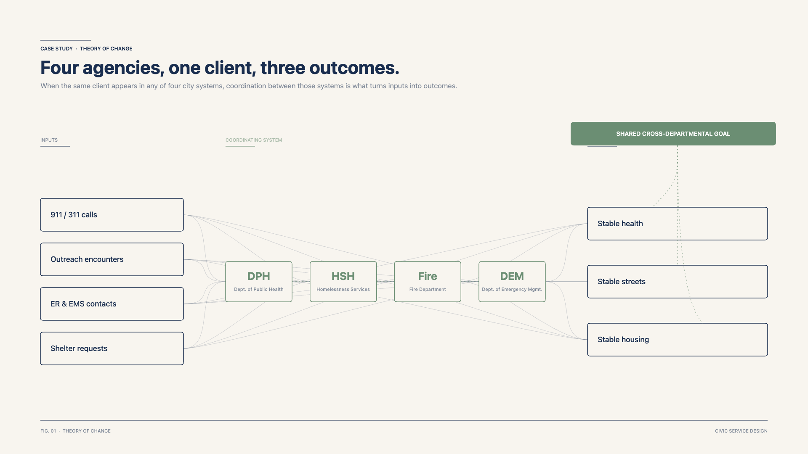
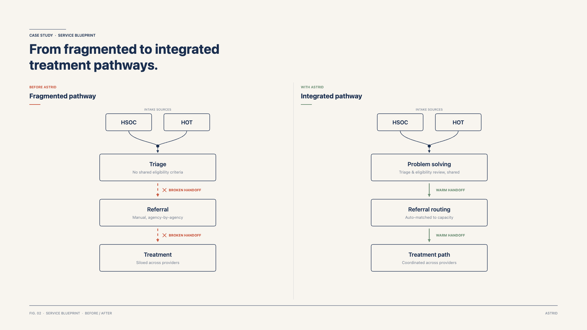
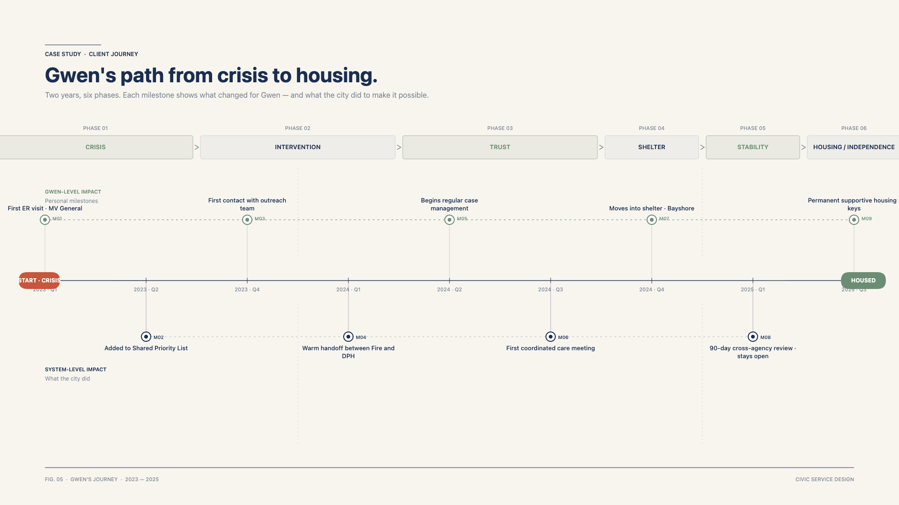
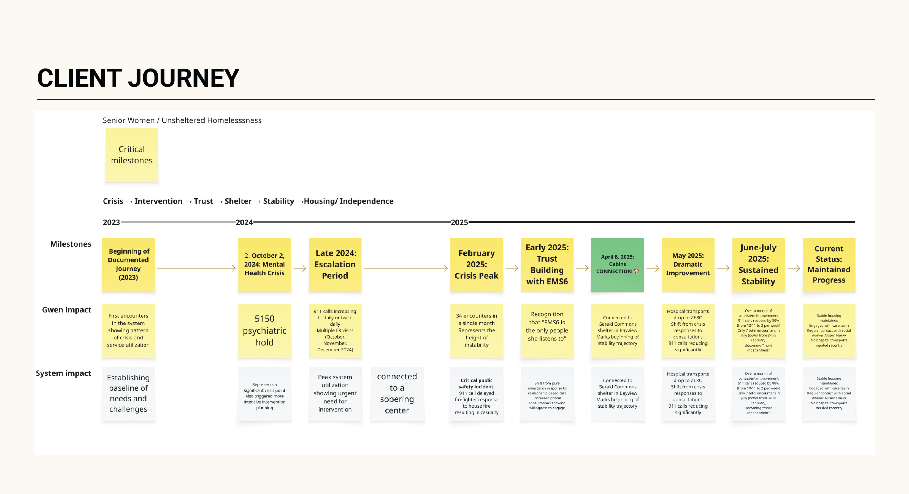

The problem
The brief described this as a data integration problem: seven departments, seven systems, no shared view of a client. But after a few weeks of ride-alongs and care-coordination meetings, the real failure showed up somewhere else. Breakdowns happened in the handoffs between departments. Nobody owned the client across the path.
Departments were failing at the spaces between them.
Seven city departments touch people experiencing homelessness across their journey through city services. ASTRID's first phase focused on the four departments closest to the operational gap — DPH, Fire, DEM, and HSH. ASTRID 2.0 now integrates data across all seven departments (adding Police, Public Works, and HSA).
San Francisco serves roughly 16,000 unhoused individuals across its city departments each year. Within that population, a smaller group of high-utilizers drives a disproportionate share of emergency-services demand — a pattern consistent with national homelessness data, where roughly 10% of the unhoused population accounts for half of all service encounters. The Shared Priority List identifies the 191 highest-acuity clients citywide: the individuals for whom uncoordinated care has been most costly and least effective.

Methods used
Mixed-method research
30+ ride-alongs across DPH (Department of Public Health), Fire, DEM (Department of Emergency Management), and HSH (Homelessness and Supportive Housing), plus 45+ interviews with field staff and leadership, surfaced the same pattern over and over. Handoffs between departments were where clients got lost. This is the insight that reframed the brief.
Theory of change workshops
These were tough stakeholders who had to buy into taking on more work than regulation required of them. I designed and facilitated six workshops, each grounded in real client stories, with leaders from all four departments. The sessions produced the first unified street-response goal jointly held by DPH, Fire, DEM, and HSH. Prior coordination efforts had focused on housing placement (Coordinated Entry) or specific population segments; this was the first time a shared operational goal was defined across the street-response services themselves — with warm-handoff protocols and named ownership for the transitions nobody had been accountable for before.


Service blueprint
A service blueprint, built with department directors, traced the client journey across four departments and named every owner-less handoff. The map turned an abstract coordination problem into something city leaders could see in front of them.



Reusable legal scaffolding for data sharing
Sharing client information between city departments runs into privacy laws — HIPAA, plus a federal rule that protects substance-use records. I drafted the first version of the legal agreement that would let departments share lawfully; the data lead and the City Attorney's office finalized it. The result is the Homeless Multidisciplinary Data Trust (HMDT) — a one-time legal setup that future city projects can reuse instead of starting from scratch.
Information Sharing by City and County of San Francisco Homeless Adult and Family Multidisciplinary Personnel Teams: Citywide Policies and Procedures
California Welfare and Institutions Code (WIC) section 18999.8 authorizes cities and counties to establish homeless adult and family multidisciplinary teams (MDT) to facilitate the expedited identification, assessment, and linkage of individuals and families experiencing homelessness (defined as "homeless individuals and families" in WIC section 18999.8) to housing and supportive services within the City and County of San Francisco (San Francisco). It allows provider agencies to share otherwise confidential information in order to coordinate services, ensure continuity of care, and reduce duplication of services. The following policies and procedures are intended to ensure that all agencies participating in these MDTs comply with all requirements of WIC section 18999.8.
Working sessions to get staff using the data
A two-week working session in September 2024 brought data stewards from across San Francisco into one room to iterate on the integrated dataset live. It produced more than a dataset: it built a working relationship between data leads across departments that subsequent MOI engagements have continued to draw on.
The Shared Priority List
The Shared Priority List is the working list of clients with the highest cross-departmental encounters and the most complex resource and health needs — people street teams have seen repeatedly for six months or longer with no visible change in their situation. The list let four departments agree on who needed coordinated care, which ended the recurring debate over whose clients mattered most. With names settled, the meeting could move to action.
Before the SPL, coordination meetings ran long and open-ended. I added a structured template — five prompts (next steps, coordination, required resources, measuring success, case review process) — so every weekly review covered the same ground for every client. The list also unlocked something that hadn't been possible before: custom-designed resource delivery for clients whose needs didn't fit standard pathways. The SPL is now central to the Lurie Administration's Neighborhood Street Teams.


Four-month pilot
A focused, four-month pilot tested whether all four layers worked in practice. The 15 clients were selected as the highest-acuity individuals on the SPL who had been engaged with services in the previous 90 days and consented to participate in the cross-departmental care coordination. Two-thirds moved into housing, shelter, treatment, or case management. Zero deaths. Zero overdoses.


What I learned about who needs the data
The first field tool put real-time client data in outreach workers' hands. Tool analytics showed outreach workers were checking the app before and after shifts, not during contacts — and that managers were the ones running the workflow, assigning priorities, and reviewing histories. The field-tool use case turned out to be a manager-tool use case. I pivoted to a manager-driven dashboard everyone can read, sized for where coordination actually happens.
ASTRID is now the operational backbone of Mayor Lurie's Neighborhood Street Teams model — and was selected for the largest grant Bloomberg Philanthropies has ever awarded a city innovation office.
Outcomes
Across 15 of the highest-acuity clients in the pilot cohort, the integrated system did what seven disconnected ones could not.
The 15-client cohort was a focused subset — small enough that frontline staff could give each client real attention, big enough that breakdowns would surface. Since then, several iterations of the Shared Priority List have addressed client situations beyond the initial pilot, and ASTRID 2.0 integrates data across all seven city departments.
What ASTRID specifically contributed: the cross-departmental coordination structures (warm-handoff protocols, named-owner assignments), the legal framework for data sharing through HMDT, the integrated dataset and Shared Priority List methodology, and the operational dashboards now in use across the participating departments. What the broader administration contributed: the political mandate of Mayor Lurie's March 2025 Executive Directive, the Neighborhood Street Teams operational model, and the resourcing that allowed the work to scale.
The pilot outcomes — the two-thirds-to-care figure, the zero deaths and overdoses — reflect coordinated care delivered through ASTRID's infrastructure. For context, San Francisco averages about 40 fatal and 200 non-fatal overdoses per month, concentrated among the same frequent drug users. Without ASTRID's infrastructure, those outcomes would not have been deliverable in the same form. Without the administration's broader commitment, ASTRID's infrastructure would not have been resourced to scale.
- First cross-departmental by-name list in San Francisco history.
- ASTRID became the operational backbone of the Lurie Administration's Neighborhood Street Teams.
- Cited as foundational in Mayor Lurie's March 2025 Executive Directive on homelessness.
- Selected for a 3-year, $7M Bloomberg Philanthropies partnership.
- The HMDT legal framework, theory-of-change methodology, and working-session pattern are now reusable infrastructure for subsequent MOI engagements.


Context
Stakeholders. Mayor's Office of Innovation, department chiefs, outreach workers and paramedics. Core partners: Public Health, Fire, Emergency Management, Homelessness and Supportive Housing — later joined by HSA (Human Services Agency), Police, and Public Works in ASTRID 2.0.
Funding. Bloomberg Philanthropies and Johns Hopkins University.
Scale. 16,000 unhoused San Franciscans served; 191 highest-acuity individuals identified. The pilot integrated 125,000 street encounters across four departments; ASTRID 2.0 now integrates data across all seven departments and 120+ users.
Timeline. 2023 – Present.